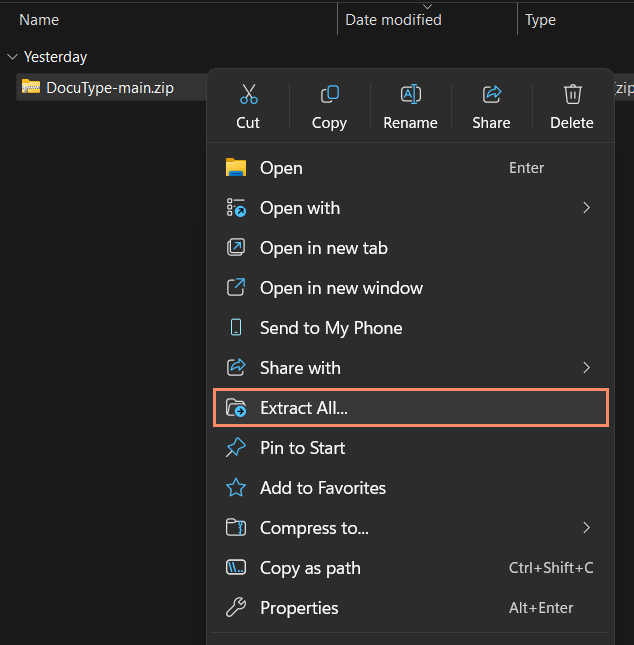
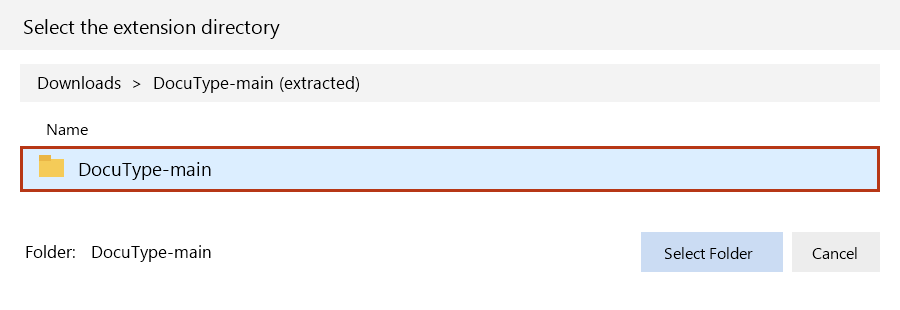

Type into
Google Docs
Paste text or import a PDF, choose a typing speed, and let DocuType enter it into your document.
ZIP download · Install as an unpacked extension
Install in Chrome
Download the ZIP
Click Download for Chrome above. Look for
DocuType-main.zipin your Downloads folder.-
Extract the folder
On Windows, right-click the ZIP, choose Extract All…, then click Extract. On Linux, choose Extract Here if your file manager offers it. On macOS, double-click the ZIP. Open the extracted folder and check that it contains
manifest.json.
Right-click the ZIP, choose Extract All…, then click Extract. Inside the extracted folder DocuType-main/ ├── manifest.json ├── content/ ├── icons/ ├── lib/ └── popup/
-
Load the extracted folder
Open
chrome://extensionsin Chrome. Switch on Developer mode, click Load unpacked, and select the folder containingmanifest.json.
Chrome on Windows with Developer mode enabled. 
Select the extracted folder that contains manifest.json. Open DocuType in Google Docs
Open an editable document and place your cursor. From Chrome’s extensions menu, open DocuType, paste your passage, choose a speed, and click Start typing.